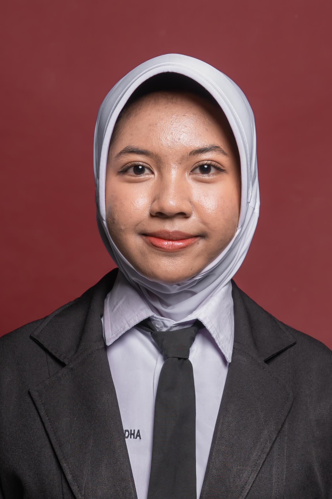

085754687798 || Jl. Cendana 1, Banjarmasin || /www.linkedin.com/in/atrianarm || atrianaretnom@gmail.com
Mahasiswa D4 Bisnis Digital Politeknik Negeri Banjarmasin dengan keterampilan komunikasi hubungan masyarakat, manajemen media sosial,desain kreatif, dan kerja sama tim yang baik. Berpengalaman nyata dalam mengelola publikasi digital organisasi serta menangani komunikasi delegasi acara tingkat kabupaten. Memiliki kemampuan public speaking hingga mengaplikasian Microsoft Word, Canva, dan Capcut.
Politeknik Negeri Banjarmasin
Aug 2026 - Sekarang
SMAN 1 Simpang Empat
Jul 2023 - May 2026
Forum Anak Daerah (FAD) Kabupaten Tanah Bumbu
Jul 2025-Sekarang
OSIS SMAN 1 Simpang Empat
Nov 2024 - Nov 2025
Event Hari Anak Nasional (HAN) Kabupaten Tanah Bumbu
Jul 2025 & Jul 2026
SAPA: Sahabat Panti ceria (event Berbagi ke panti asuhan)
Dec 2025
ASTRAVIKA: HUT SMANSA ke-32
Aug 2025
Hard Skill:
Soft Skill: